Workshop 3: Introduction to ggplot2, tidyr & dplyr
Québec Centre for Biodiversity Science
ggplot2
Introduction
Why use R for plotting?

Introduction
Why use R for plotting?

Introduction
Why use R for plotting?
Beautiful and flexible graphics! 
Introduction
- Have you created plots?
- What kind of plot?
- Which software?
- Have you plotted in R?
- base R, lattice?
- ggplot2?
Introduction
- To follow along:
Code and HTML available at http://qcbs.ca/wiki/r/workshop3
- Recommendation:
- create your own new script
- refer to provided code only if needed
- avoid copy pasting or running the code directly from script
- ggplot2 is also hosted on github: https://github.com/hadley/ggplot2
Introduction
Required packages
install.packages("ggplot2")
library(ggplot2)Outline
- Your first R plot
- Basic scatter plot
- Challenge 1
- Grammar of graphics
- More advanced plots
- Available plot elements and when to use them
- Challenge 2
- Saving a plot
- Fine tuning your plot
- Colours
- Themes
- Miscellaneous
Basic scatter plot
?qplotarguments:
data
x
y
…
Basic scatter plot
Look at pre-loaded “iris” dataset:
?iris
head(iris)
str(iris)
names(iris)Basic scatter plot
qplot(data = iris,
x = Sepal.Length,
y = Sepal.Width)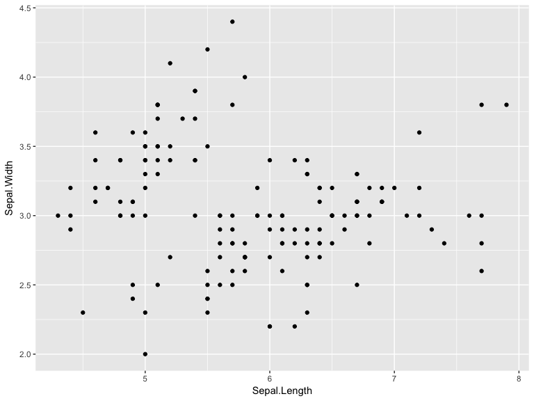
Basic scatter plot
qplot(data = iris,
x = Species,
y = Sepal.Width)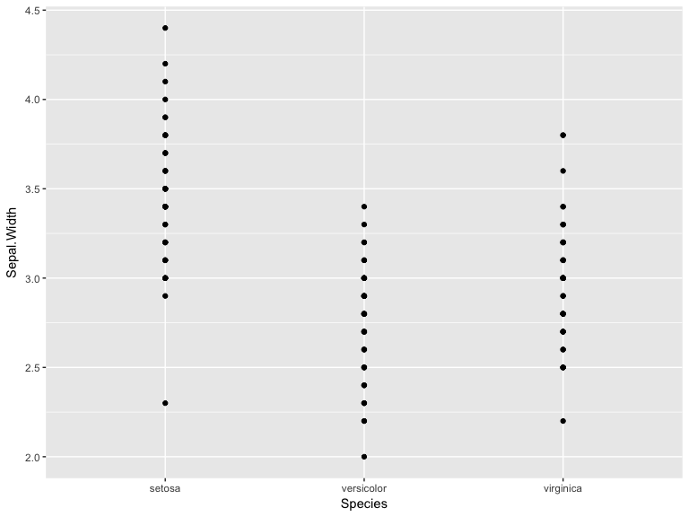
Less basic options
arguments:
xlab
ylab
main
Less basic options
qplot(data = iris,
x = Sepal.Length,
xlab = "Sepal Length (mm)",
y = Sepal.Width,
ylab = "Sepal Width (mm)",
main = "Sepal dimensions")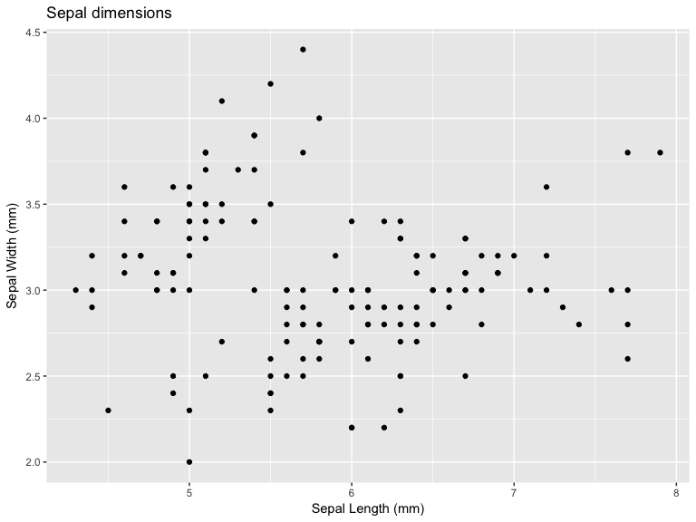
Challenge #1
Produce a basic plot with built in data (5 minutes)
?CO2
data(CO2)
?BOD
data(BOD)Solution to challenge #1
Produce a basic plot with the CO2 dataset
qplot(data = CO2,
x = conc,
xlab = "CO2 Concentration (mL/L)",
y = uptake,
ylab = "CO2 Uptake (umol/m^2 sec)",
main = "CO2 uptake in grass plants")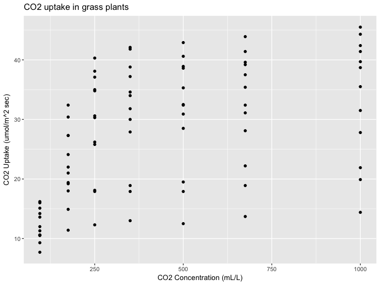
Grammar of graphics (gg)
A graphic is made of elements (layers)
- Data
- aesthetics (aes)
- transformation
- geoms (geometric objects)
- axis (coordinate system)
- scales

Grammar of graphics (gg)
A graphic is made of elements (layers)
- Data
- Aesthetics (aes), to make data visible
- x,y : position along the x and y axis
- colour: the colour of the point
- group: what group a point belongs to
- shape: the figure used to plot a point
- linetype: the type of line used (solid, dashed, etc)
- size: the size of the point or line
- alpha: the transparency of the point
Grammar of graphics (gg)
A graphic is made of elements (layers)
- Data
- Aesthetics (aes)
- Geometric objects (geoms)
geom_point(): scatterplotgeom_line(): lines connected to points by increasing value of xgeom_path(): lines connected to points in sequence of appearancegeom_boxplot(): box and whiskers plot for categorical variablesgeom_bar(): bar charts for categorical x axisgeom_histogram(): histogram, geom_bar for continuous x axis
Grammar of graphics (gg)
Edit any single element to produce a new graph e.g., by changing the coordinate system

How it works
Create a simple plot object: plot.object <- ggplot() OR qplot()
Add graphical layers: plot.object <- plot.object + layer()
Repeat step 2 until statisfied, then print: print(plot.object)
qplot() vs ggplot()
qplot(data = iris,
x = Sepal.Length,
xlab = "Sepal Length (mm)",
y = Sepal.Width,
ylab = "Sepal Width (mm)",
main = "Sepal dimensions")
ggplot(data = iris, aes(x = Sepal.Length, y = Sepal.Width)) +
geom_point() +
xlab("Sepal Length (mm)") +
ylab("Sepal Width (mm)") +
ggtitle("Sepal dimensions")Assign plot to an R object
basic.plot <- ggplot(data = iris, aes(x = Sepal.Length, y = Sepal.Width)) +
geom_point()+
xlab("Sepal Length (mm)")+
ylab("Sepal Width (mm)")+
ggtitle("Sepal dimensions")
basic.plot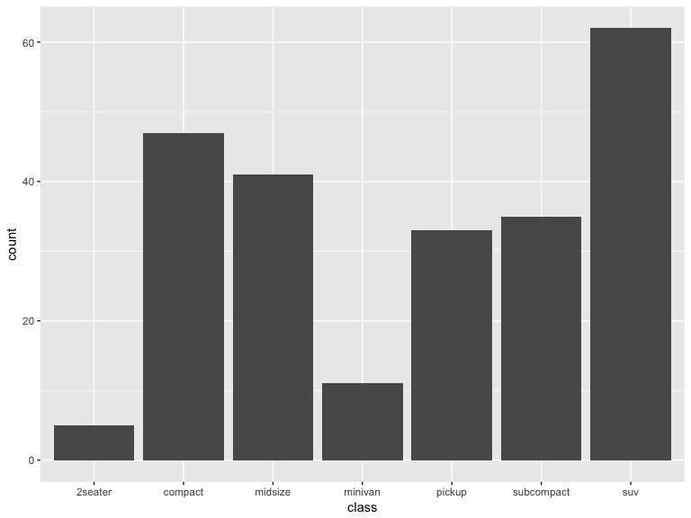
Adding colours and shapes
Add aesthetics using aes()
basic.plot <- basic.plot + aes(colour = Species, shape = Species)
basic.plot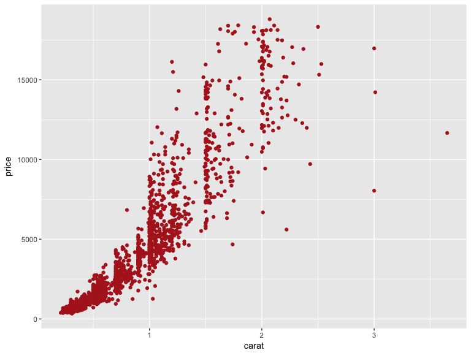
Adding geometric objects
Add linear regressions with geom_smooth()
linear.smooth.plot <- basic.plot + geom_smooth(method = "lm", se = FALSE)
linear.smooth.plotChallenge #2
Produce a colourful plot with linear regression (or other smoother) from built in data such as the CO2 dataset or the msleep dataset
?CO2
data(CO2)
?msleep
data(msleep)Solution to challenge #2
` Example using loess smoothing
data(CO2)
CO2.plot <- ggplot(data = CO2, aes(x = conc, y = uptake, colour = Treatment)) +
geom_point() +
xlab("CO2 Concentration (mL/L)") +
ylab("CO2 Uptake (umol/m^2 sec)") +
ggtitle("CO2 uptake in grass plants") +
geom_smooth(method = "loess")
CO2.plot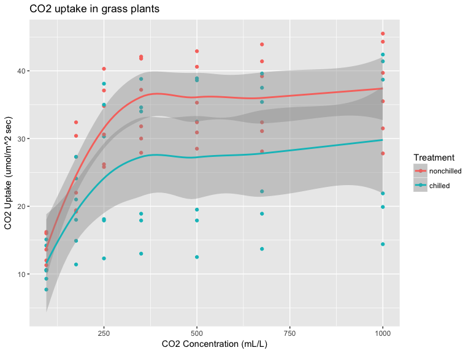
Adding multiple facets and groups
Data becomes difficult to visualize when there are multiple factors, e.g., the CO2 data set contains data on CO2 uptake for chilled vs non-chilled treatments from two different regions. Let’s build a basic plot using this data set:
CO2.plot <- ggplot(data = CO2, aes(x = conc, y = uptake, colour = Treatment)) +
geom_point() +
xlab("CO2 Concentration (mL/L)") +
ylab("CO2 Uptake (umol/m^2 sec)") +
ggtitle("CO2 uptake in grass plants")
CO2.plot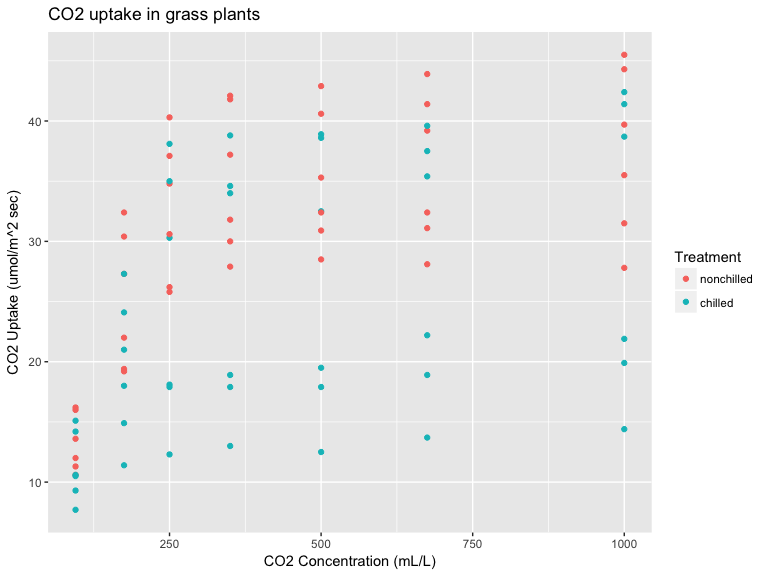
Adding multiple facets and groups
If we want to compare regions, it is useful to make two panels. Basic synthax : plot.object + facet_grid(rows ~ columns)
Ex: CO2 by plot type
CO2.plot <- CO2.plot + facet_grid(. ~ Type)
CO2.plot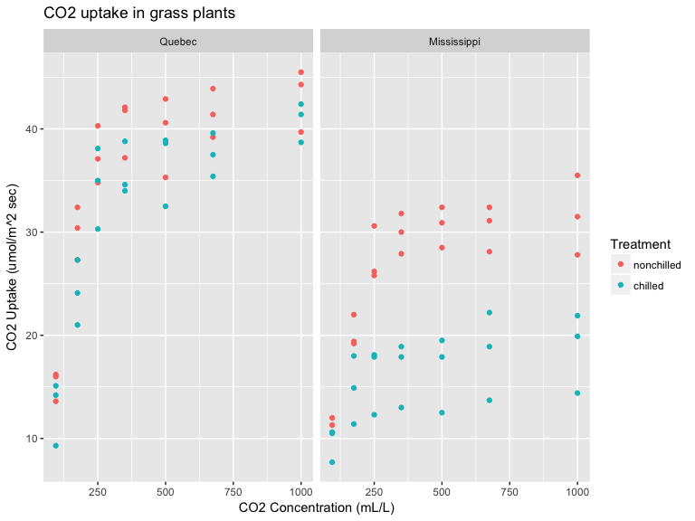
Adding multiple facets and groups
Now that we have two facets, let’s observe how the CO2 uptake evolves as CO2 concentrations rise, by adding connecting lines to the points using geom_line():
CO2.plot + geom_line()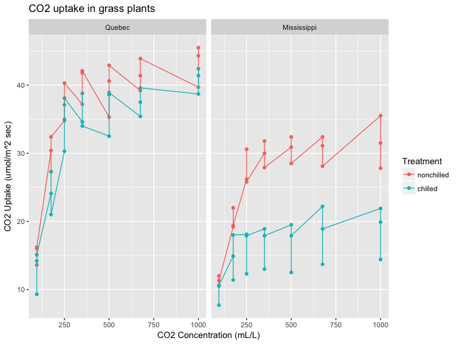 Hmm wrong! Because each treatment in each region has 3 replicates
Adding multiple facets and groups
Specify groups
CO2.plot <- CO2.plot + geom_line(aes(group = Plant))
CO2.plot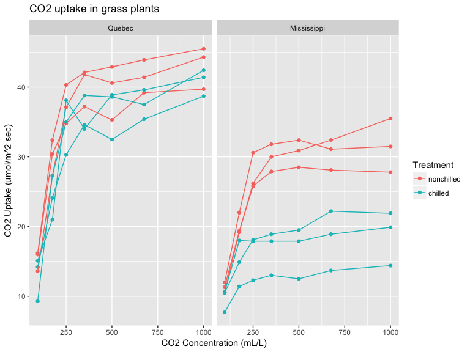
Available elements
 https://www.rstudio.com/wp-content/uploads/2015/03/ggplot2-cheatsheet.pdf
https://www.rstudio.com/wp-content/uploads/2015/03/ggplot2-cheatsheet.pdf
Additional resources
help(package = ggplot)
http://ggplot2.tidyverse.org/reference/


Challenge #3
Explore a new geom and other plot elements with your own data or built in data.
data(msleep)
data(OrchardSprays)Solution to challenge #3
data(OrchardSprays)
box.plot <- ggplot(data = OrchardSprays, aes(x = treatment, y = decrease)) +
geom_boxplot()
box.plot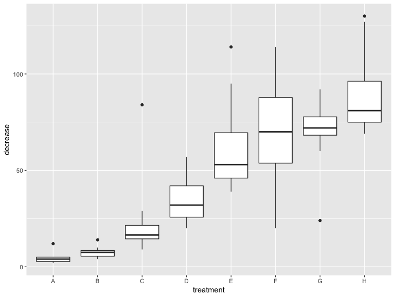
Saving plots in RStudio

Saving plots in code
ggsave() will write directly to your working directory all in one line of code and you can specify the name of the file and the dimensions of the plot:
ggsave("CO2 plot.pdf",
CO2.plot,
height = 8.5,
width = 11,
units = "in")Note that vector format (e.g., pdf, svg) are often preferable choice compared to raster format (jpeg, png,…)
Other methods to save image ?pdf ?jpeg
Fine tuning - colours
CO2.plot + scale_colour_manual(values = c("nonchilled" = "red", "chilled" = "blue"))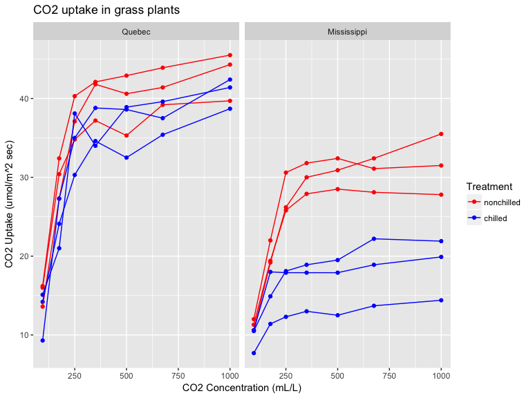
Fine tuning - colours
install.packages("RColorBrewer")
require(RColorBrewer)
display.brewer.pal(7,"Dark2")Fine tuning - colours
CO2.plot + scale_color_brewer(palette = "Dark2")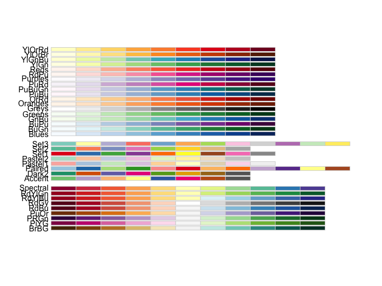